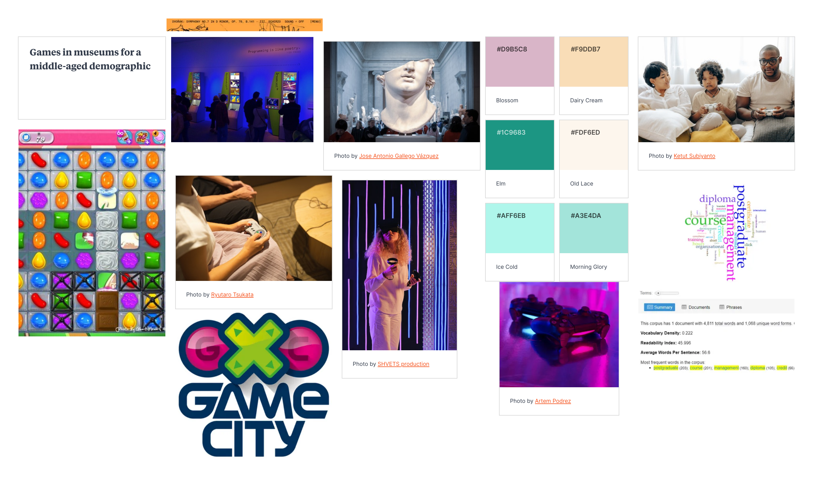

Independent Learning
Audio Analysis
One of the websites that I looked at is Sculpting Harmony This website is a showcase and a story about the creation of Disney Concert Hall by Frank Gehry. The website takes you through the construction and planning behind the hall and uses audio to enhance the journey. From the beginning users toggle into the background audio which plays classical music that would be played in the hall, to immerse the user in the feeling of going to a concert hall. The Background music is planned and labelled so users can toggle on and off, check song title and composer. The site automatically turns off the background when the video interview with Frank Gehry is playing. The website gives control to the user but also doesn't make them do all the work which makes the website a very enjoyable experience to use. The audio is combined with different interactive elements such as 3D models, videos working through the scroll function and text following the cursor to name a few.
Mood Board
Lab Task
Original Audio
Cropped Sound
Medium, Joint Stereo
Has good quality, File size is mid-range of the three to compare.
Standard, Stereo
Has the largest file size and the best quality. Has the highest bit depth of the samples.
Medium, Mono
Smallest file size and worst quality, no differences between left and right speaker and that ability has been condensed.
All cropped and edited files are smaller than the original, allowing them to run faster than before, yet this does compromise on the quality and runtime of the audio, making it a give and take decision.